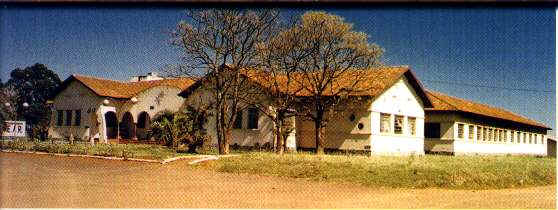
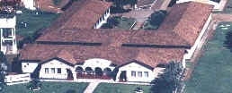
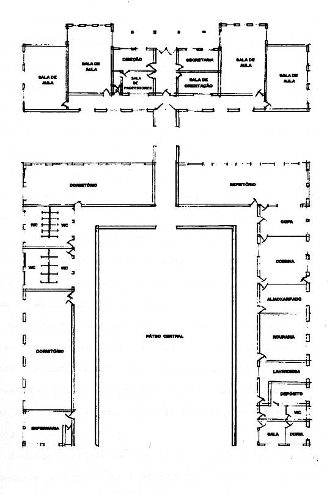

Prédio Principal


A escola inaugurada em 1953 funcionou em um edifício construído especialmente para este fim.
Com quatro pavilhões , sendo o primeiro organizado para repartições
administrativas e pedagógicas e mais quatro salas de aula. O segundo, o
terceiro e o quarto pavilhões são unidos ao primeiro por um corredor
coberto.

Estes três pavilhões formam um "U".
No pavilhão de ligação instalou-se um dormitório e o refeitório.
No terceiro a copa, cozinha, aprovisionamento, passaderia,
lavanderia e um apartamento para o Diretor.
No quarto pavilhão instalou-se um segundo dormitório e uma suíte para enfermaria
e gabinete médico dentário,
conforme ilustra a seguir a planta baixa do prédio.

Foram construídos dois novos pavilhões que atualmente abrigam os dormitórios e a biblioteca.
O dormitório que se encontrava ao lado do refeitório foi dividido em duas salas
de aulas,
o outro dormitório foi transformado num auditório com palco para
apresentações artísticas, palestras e outros eventos.
O primeiro banheiro foi modificado para abrigar o laboratório de física, química e
biologia e o outro
transformado em sala de aula, a enfermaria abriga hoje o alojamento feminino
e o
apartamento do Diretor foi ocupado pela cooperativa e tesouraria da escola,
a
sala ao lado do apartamento do diretor é hoje utilizada pelo departamento
técnico do Colégio,
conhecida pelos alunos como sala dos técnicos
O primeiro pavilhão mantém sua função original, com uma das salas destinadas a aulas de informática.